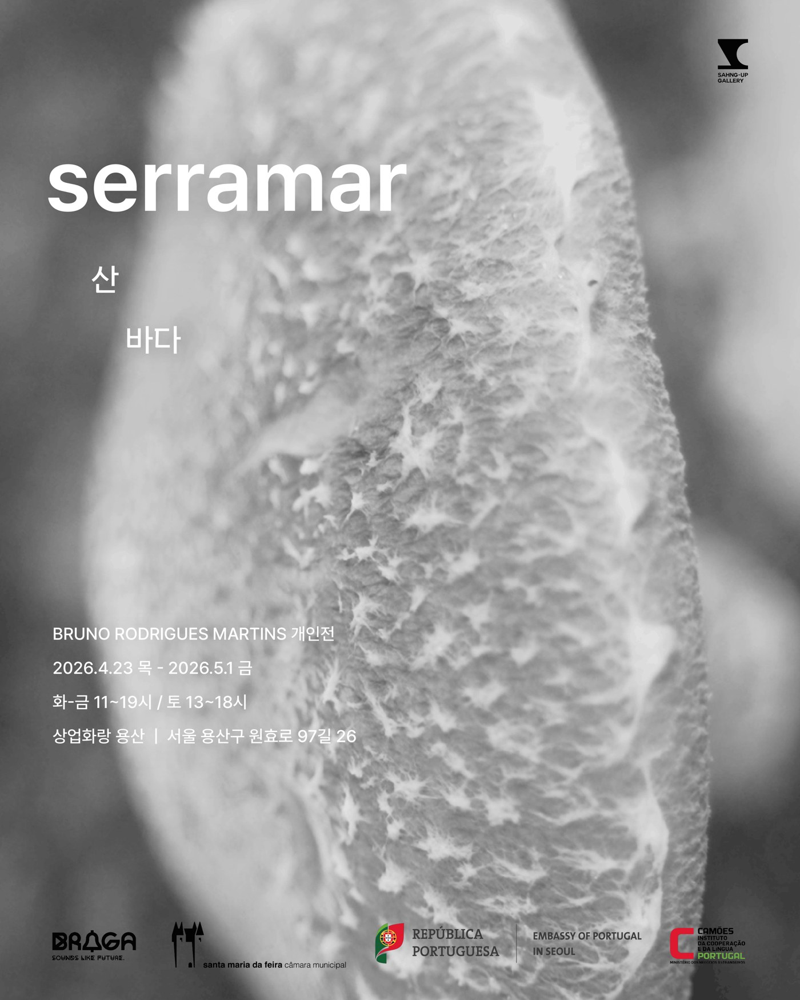
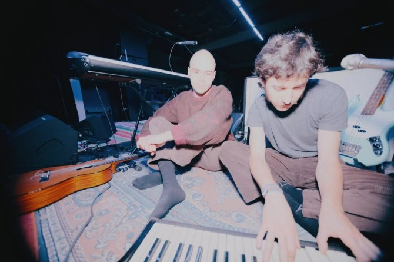
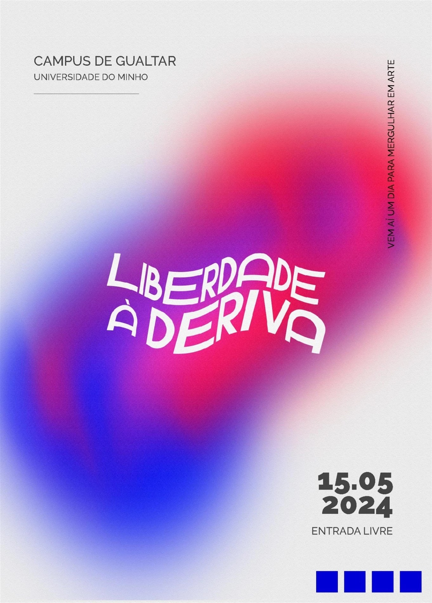
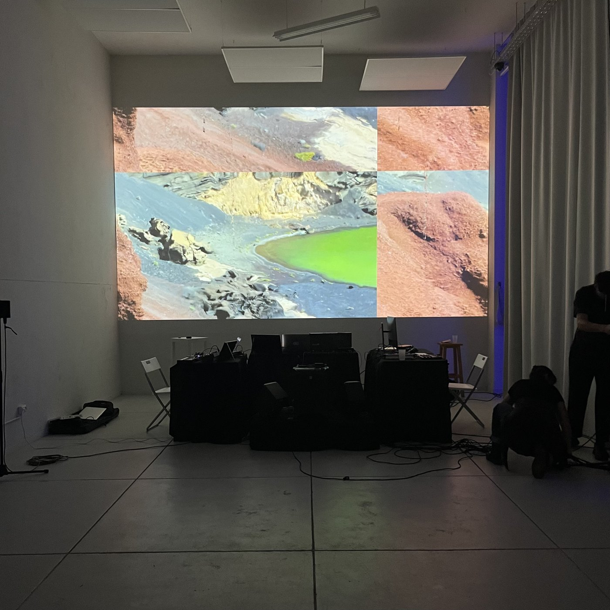
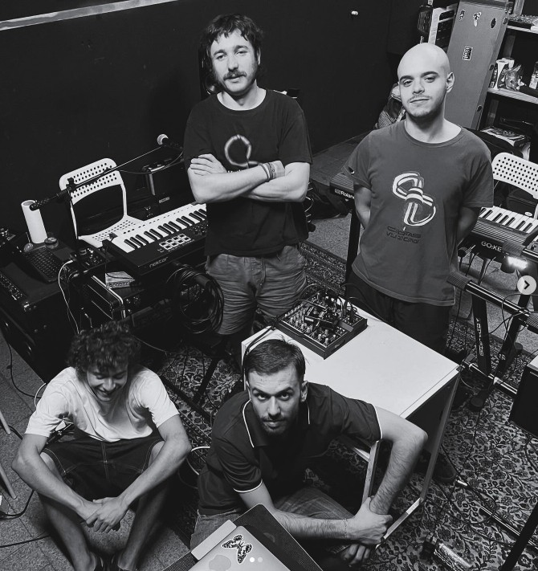
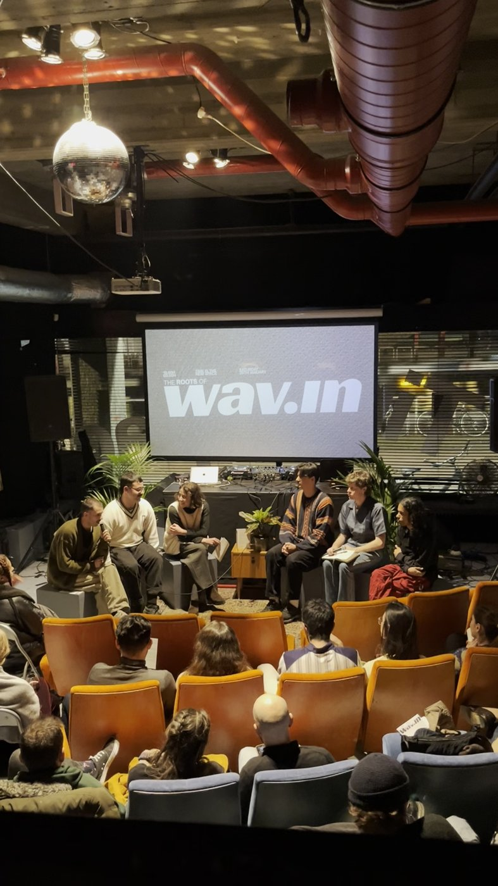
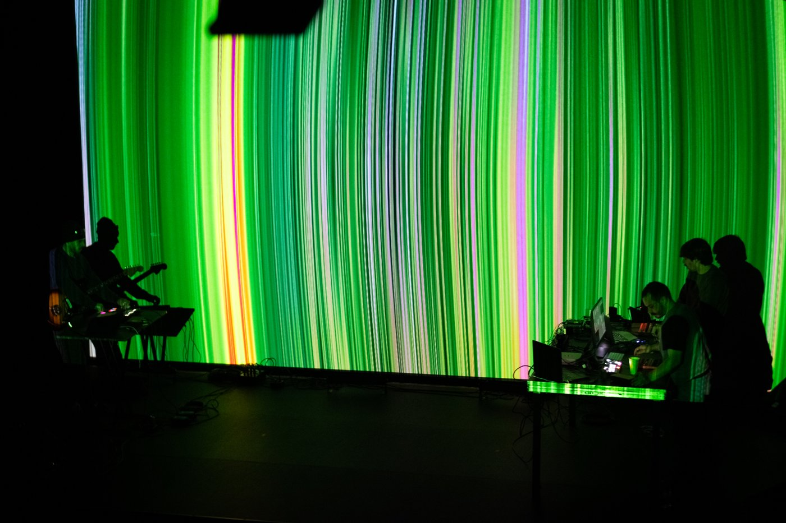
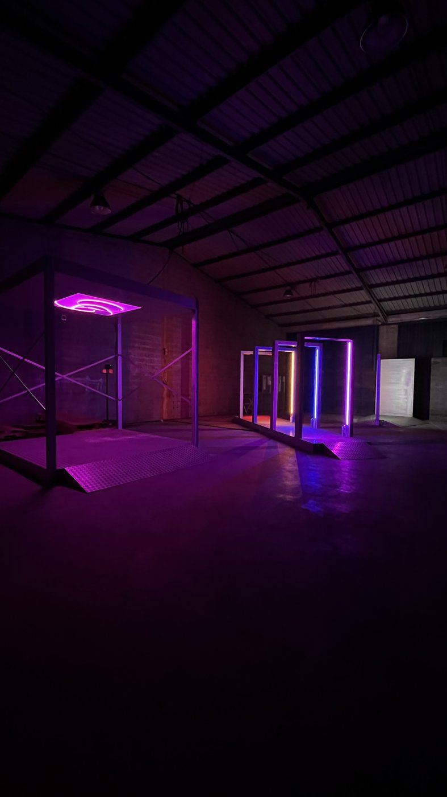

arquivo
2026
MOSTRA III – Exposição Coletiva de Gonçalo Carneiro e Rafael Gonçalves Cardoso no Museu D. Diogo de Sousa e Casa Rolão.ver página →



Apoio à Internacionalização da exposição individual de Bruno Rodrigues Martins na Sahng-Up Gallery, em Seul, Coreia do Sul.2025
Campo Gravitacional, exposição em nome próprio da associação no OCUPA #10, realizada com a participação de todos os membros.ver página →

Apoio à Produção e Contratualização do Concerto Monstro no Festival Este Oeste.Exposição MOSTRA II – Exposição individual de Francisco Gaspar.ver página →

2024

Apoio à Produção do Projeto Cultural Deriva, em parceria com a Universidade do Minho.
Apoio à Produção e Contratualização da performance "Lanzarote" do Coletivo Kindergarten no FISGA Porto.
Apoio à Produção e Contratualização do Coletivo Wav.In no Festival Este Oeste.
Apoio à Internacionalização do coletivo Wav.In em Roterdão.Exposição Coletiva MOSTRA I no Sé La Vie Braga, com artistas: Incalma/Aguça, Telmiuai, Coletivo Kindergarten, Bruno Rodrigues Martins, Wav.In e Nádia Borges.ver página →

2023

Apoio à Produção e Contratualização de Fliessblad – Performance do Coletivo Kindergarten, em coprodução com o gnration.
Apoio à Produção e Criação de Pathos – Circuito de Instalações Interativas do Coletivo Kindergarten, em parceria com o Município de Braga e o Grupo Navarra.